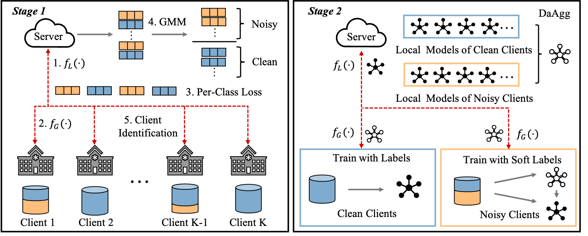
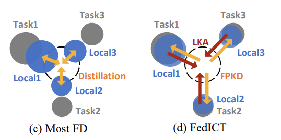
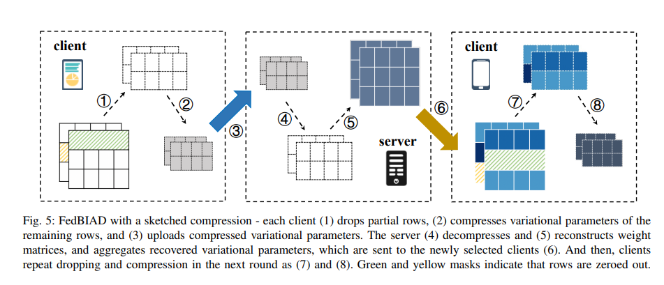
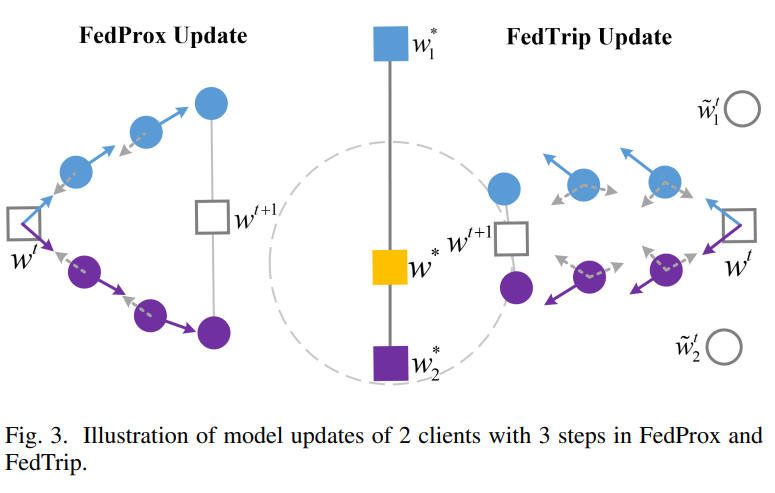
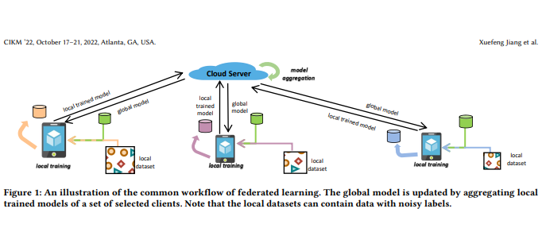
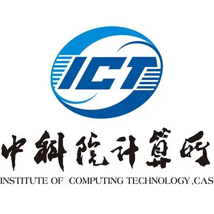

- Distributed ML system, Federated Learning and AI Robustness
- Cyber Security, Code Vulnerability Detection
- Weakly Supervised Learning (Noisy Label Learning & Long-tailed Learning & Semi-supervised Learning & Self-supervised Learning)
- AutoDrive: Perception, SLAM, Model Deployment, Multi-sensor Fusion
- Conference Program Committee for: ICLR, NeurIPS, ECAI, KDD and AAAI workshop
- Journal Reviewer for: ACM/TKDD
- Help to Review: DCN
- [2023.07.21] It's a very special&meaningful day for me, and I'll never forget that day ^_^
- [2023.06.23] One co-authored paper FedICT got accepted by IEEE TPDS.
- [2023.04.20] One co-authored paper with HUST & HKUST got accepted by IJCAI 2023.
- [2023.01.28] Two co-authored papers got accepted by IEEE/IPDPS 2023.
- [2022.10.31] I start working at AMD (Advanced Micro Devices, Inc.) AI Group as a Co-op under the guidance of Treemann, in Beijing.
- [2022.08.03] My first work got accepted by ACM/CIKM 2022 with NSF/SIGWeb student award.
|

|
FedNoRo: Towards Noise-Robust Federated Learning by Addressing Class Imbalance and Label Noise Heterogeneity
Nannan Wu, Li Yu, Xuefeng Jiang, Kwang-Ting Cheng, Zengqiang Yan
International Joint Conference on Artificial Intelligence (IJCAI), 2023
arXiv
To tackle both long-tailed & noisy data issue in the context of Federated Learning.
|
|

|
FedICT: Federated Multi-task Distillation for Multi-access Edge Computing
Zhiyuan Wu, Sheng Sun, Yuwei Wang, Min Liu,Xuefeng Jiang, Bo Gao
IEEE Transactions on Parallel and Distributed Systems (TPDS), 2023
arXiv
To deal with non-IID issue of Federated Learning with Knowledge Distillation.
|
|

|
FedBIAD: Communication-Efficient and Accuracy-Guaranteed Federated Learning with Bayesian Inference-Based Adaptive Dropout
Jingjing Xue, Min Liu, Sheng Sun, Yuwei Wang, Hui Jiang, Xuefeng Jiang
IEEE International Parallel and Distributed Processing Symposium (IPDPS), 2023
arXiv
To reduce communication cost in Federated Learning system via Adaptive Bayesian Dropout.
|
|

|
FedTrip: A Resource-Efficient Federated Learning Method with Triplet Regularization
Xujing Li, Min Liu, Sheng Sun, Yuwei Wang, Hui Jiang, Xuefeng Jiang
IEEE International Parallel and Distributed Processing Symposium (IPDPS), 2023
arXiv
To tackle non-IID data issue in Federated Learning with lower computation cost.
|
|

|
Towards Federated Learning against Noisy Labels via Local Self-Regularization
Xuefeng Jiang, Sheng Sun, Yuwei Wang, Min Liu
ACM International Conference on Information & Knowledge Managements (CIKM), 2022
arXiv
An early attempt to deal with noisy labels considering privacy concern of Federated Learning.
|
|

|
PhD Candidate
Period: 2021.09 - 2026.07
Institute of computing technology, Chinese Academy of Sciences (ICT, CAS)
GPA: 3.9/4.0
|
|
|
Degree: Bachelor
Period: 2017.09 - 2021.07
Network Engineering, School of Computer Science, Beijing Posts and Telecommunications University (BUPT)
GPA: 3.69/4.0 (Ranked 2 Out of 69)
|
- Research Project with Huawei MindSpore Team
- AVP-SLAM
- Awesome Federated Learning (800+ stars on Github) as a main contributor
- ...
- Algorithm R&D Co-op/intern @AMD focusing on AutoDrive&SLAM, 2022.10 - now
- FedML open-source volunteer, 2022.3-2022.4
- Backend intern @AI start-up, 2020.8 - 2020.10
- QA intern @Yuanfudao, 2019.8 - 2019.10
- UCAS Merit Student and Outstanding student cadres, 2023
- ACM/CIKM NSF&SIGWeb Student Award, 2022
- Merit Undergraduate Scholarship of Chinese Academy of Sciences, 2021
- Beijing and BUPT Outstanding Graduates, 2021
- BUPT Enterprise Scholarship (top 10 out of 600), 2020
- Completion of National Undergraduate Innovation and Entrepreneurship Training Project and completed National Software Copyright Registration as project leader, 2019
- National Mathematics Competition, Third Prize & National English Competition, Third Prize, 2018&2019
- Mathematical Contest in Modeling, Honorable Prize, 2018&2019
- BUPT Class B Scholarship, 2018&2019
|
{kind=link}